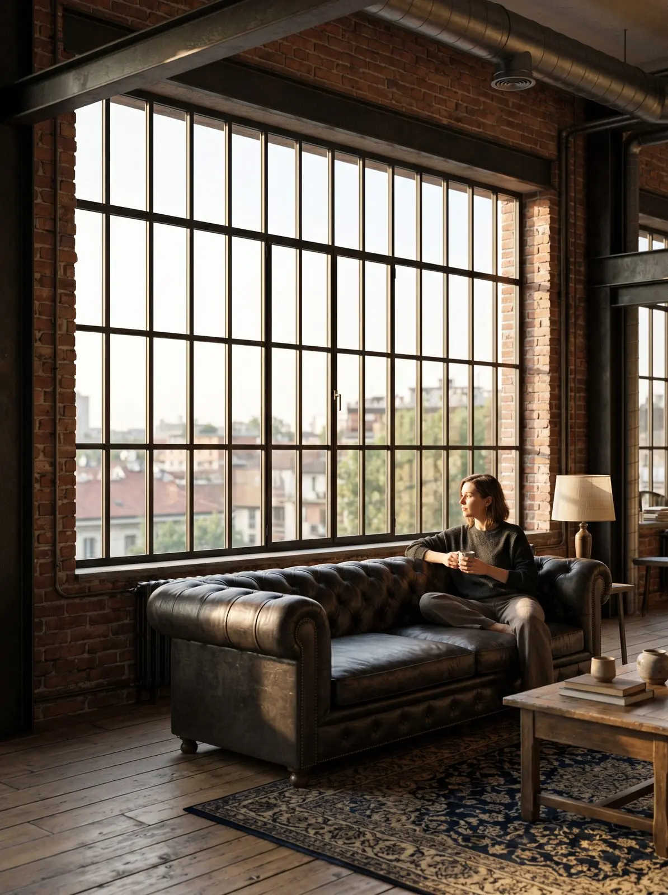

Voglio una casa di design.
Linee sottili, più vetro, più luce.
Cerchi un'estetica che si vede al dettaglio: porte interne rifinite, battiscopa coordinati, maniglie di pregio, finiture impeccabili. La casa deve raccontare uno stile coerente, non un accostamento di pezzi.
Total look: porte interne con battiscopa in tinta, che produciamo entrambi con la stessa finitura, e maniglie dei principali brand. Per i serramenti il Minimale (cod. MX 753), effetto ferrofinestra: linee ultrasottili, più vetro, più luce.
Per le grandi aperture sul giardino lo scorrevole minimale MX 166. Finiture coordinate tra interno ed esterno, colori a campione sull'alluminio. Coinvolgici insieme al tuo interior designer.
Come si ottiene una finestra davvero minimale?
Servono tre cose insieme: un profilo con vista ridotta, un vetro di grande formato e una posa che nasconda il telaio nella muratura. Attenzione ai profili che sembrano alluminio ma non lo sono: lo spieghiamo nella guida alluminio vero o «OGM».
L'angolo tra una finestra e una portafinestra è venuto talmente bene che ancora oggi mi fermo a guardarlo con piacere.Luca M. · Recensione Google
Partiamo dal sopralluogo.
Veniamo a casa tua, prendiamo le misure e ti spieghiamo cosa serve davvero, prima di parlare di prezzo.
Dove installiamo
Da Vigano di Gaggiano a Milano Sud e Milano Ovest, con i nostri tecnici e i nostri posatori.